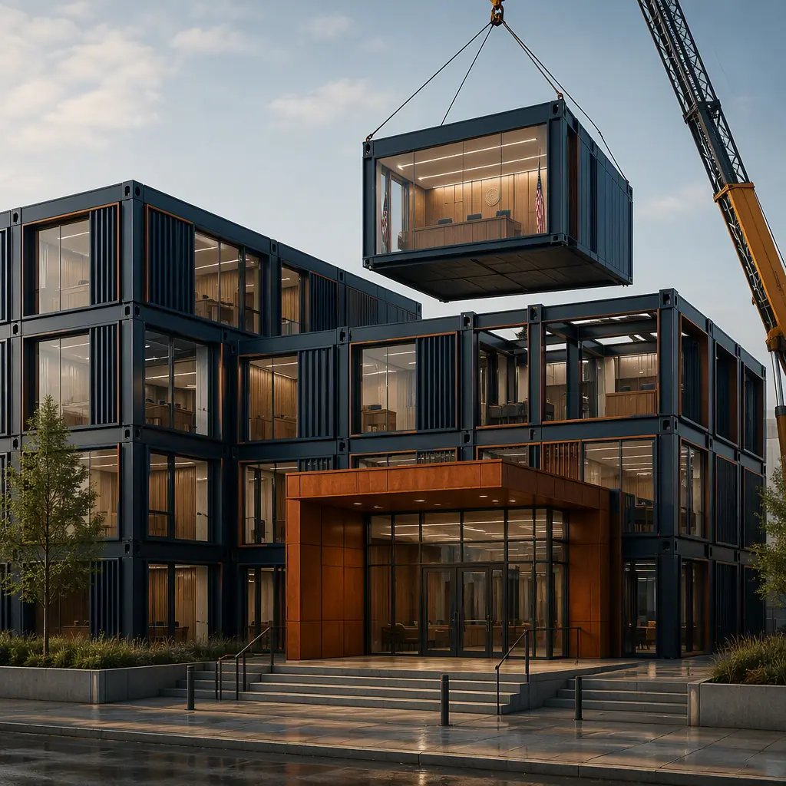
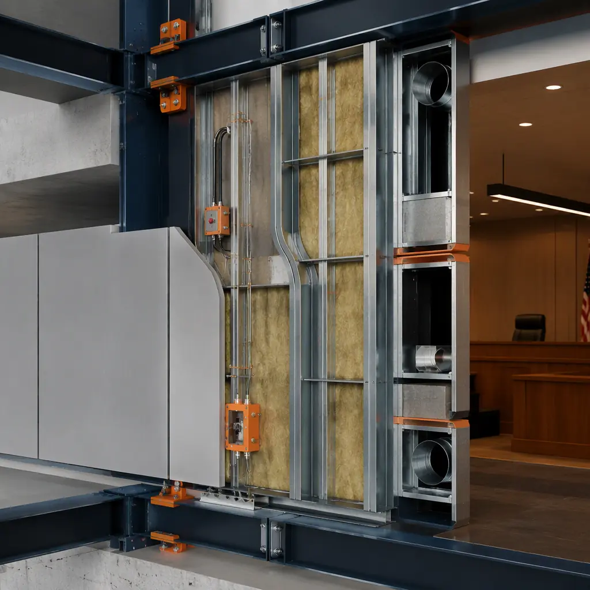

The United States maintains approximately 3,400 courthouses and judicial facilities at the federal, state, and county levels, with a deferred maintenance backlog estimated at $9.2 billion according to the Administrative Office of the U.S. Courts. Over 30% of county courthouses were built before 1970, lacking modern security infrastructure — separate circulation paths for judges, detainees, and the public; ballistic-rated courtroom enclosures; and ADA-compliant jury assembly spaces. A traditional ground-up courthouse takes 30–48 months from appropriation to occupancy, during which time security vulnerabilities persist and court operations continue in compromised facilities. Modular prefabricated construction compresses the delivery timeline to 14–22 months by manufacturing 70–80% of the building — including ballistic-rated courtrooms, factory-fitted holding cell modules, and pre-wired judicial chambers — in a controlled factory environment while site foundations proceed concurrently. For a county funding a $28 million judicial annex through a 25-year municipal bond at 4.0%, compressing the construction period by 18 months saves approximately $2.0 million in interim interest costs alone. Our experience with modular government and municipal buildings demonstrates the same procurement and schedule advantages across public facility types.

Why Courthouses Are the Most Complex Public Buildings — And How Modular Solves the Construction Puzzle
Courthouses are arguably the most programmatically demanding building type in public-sector construction. They must simultaneously accommodate three distinct user populations — the public (plaintiffs, defendants, witnesses, jurors, spectators), judicial staff (judges, clerks, court reporters, law clerks), and in-custody defendants — each requiring physically separated circulation systems that cannot intersect at any point within the building. A single courthouse must integrate at least eight functionally distinct zones:
- Courtroom suites — each comprising the courtroom itself (900–1,800 sq ft depending on jurisdiction level), judge's chambers with private restroom and secure entrance, jury deliberation room with independent HVAC and restroom access, attorney-client conference rooms, and witness holding rooms with separate entry from public corridors. A mid-size county courthouse requires 6–12 courtroom suites, each a self-contained security zone with ballistic-rated walls and duress alarm integration;
- Central holding and detention — a secure detention area with 8–20 individual holding cells (75–100 sq ft each with tamper-resistant fixtures, continuous-weld steel wall panels, and ligature-resistant design), a central control station with CCTV monitoring and electronic door control, attorney interview rooms accessible from both the secure and public sides, and a secure vehicular sally port for prisoner transport — construction requirements that add $400–600 per square foot above standard commercial rates;
- Public service counters — clerk of court offices with ballistic-rated transaction counters (UL 752 Level 3 minimum), public record access terminals, cash handling stations with time-delay safes, and queuing areas designed for 50–200 visitors daily with magnetometer screening at the building entry;
- Judicial chambers and administrative offices — private offices for judges, magistrates, and commissioners with secure document storage and independent HVAC zoning, plus administrative space for court administration, probation services, and district attorney satellite offices;
- Jury assembly and management — a 150–400 seat jury assembly room with check-in kiosks, orientation presentation equipment, individual workstations with power and WiFi, and secure jury deliberation suites adjacent to courtrooms;
- Records and evidence storage — climate-controlled evidence vaults (temperature 65–72°F, humidity 40–50%) with chain-of-custody access logging, fire-suppression systems compatible with paper and digital evidence preservation, and high-density filing systems for case records spanning decades;
- Public circulation and waiting — secure public corridors with ballistic-rated glazing separating public traffic from judicial and detainee circulation, attorney-client meeting rooms, self-help legal resource centers, and family waiting areas near courtrooms;
- Building support and security infrastructure — central security screening with X-ray and magnetometer equipment, building-wide CCTV with 90-day recording retention, duress alarm system with direct connection to sheriff's dispatch, and redundant MEP systems with emergency generator backup.
In conventional construction, these eight zones are built sequentially by separate trade contractors — structural steel erectors, then MEP rough-in crews, then security system integrators, then detention equipment specialists, then millwork and finishes — with each trade dependent on predecessor completion. The sequential dependency stretches the construction duration to 30–48 months and generates cascading change orders when judicial security requirements evolve during the extended construction window. Modular construction compresses this by building each functional zone as completed factory modules: the courtroom module arrives with factory-installed ballistic wall panels, pre-wired audio-visual systems, and integrated duress alarm conduit; the holding cell module arrives with continuous-weld steel panels, tamper-resistant plumbing fixtures, and pre-terminated CCTV cabling; the jury deliberation room arrives with independent HVAC, acoustic isolation (STC 55 minimum from adjacent spaces), and factory-tested electronic voting system infrastructure. This factory approach eliminates 12–18 weeks of sequential security-system integration that dominates the critical path of conventional courthouse construction. See our analysis of modular police station and law enforcement construction for how the same factory-integrated security approach applies across the public safety facility spectrum.

Security Circulation — The Three-Zone Separation That Modular Delivers by Design
The defining architectural challenge of courthouse design is three-zone circulation: physically separated pathways for the public, judicial staff, and in-custody defendants that cannot intersect anywhere in the building. In conventional construction, this three-zone separation is achieved by building three independent corridor systems within the same structural envelope — a complex coordination exercise involving separate elevator banks, stairwells, and HVAC zones for each circulation path. Any construction error that creates an unintended connection between circulation zones — a misaligned door frame, an improperly sealed wall penetration, a shared return air plenum — creates a security vulnerability that requires expensive rework. The U.S. Marshals Service reports that circulation-zone deficiencies are the most common security finding in federal courthouse construction inspections, with correction costs averaging $180,000–$350,000 per facility.
Modular construction transforms three-zone separation from a field-coordination challenge into a factory-verified product. Each module is built with its circulation zone assignment fixed in the factory: a courtroom module is designed and fabricated for the public-circulation zone with corridor connections aligned to the public elevator lobby; a holding cell module is designed for the secure-circulation zone with corridor connections aligned to the secure elevator serving the sally port. The module-to-module connections — where two modules meet at a corridor junction — are the only points where circulation zones could potentially intersect, and these connections are factory-engineered with continuous structural steel separators and independent MEP penetrations that physically prevent zone crossover. The factory quality control process inspects every module connection point before the module leaves the factory, eliminating the field-inspection variability that creates circulation-zone vulnerabilities in conventional construction. Our analysis of modular construction factory QC systems documents how controlled-environment quality assurance achieves security specification compliance that field-built projects cannot reliably match.
![Factory floor of modular prefabricated construction facility, completed courthouse courtroom module with judge's bench platform pre-installed, jury box seating with integrated power and data ports visible, ballistic-rated wall panels with factory-finished surfaces, acoustic ceiling panels installed above courtroom, workers performing final quality inspection on completed module, other courtroom modules visible in various stages of assembly in background, dark navy structural steel and warm steel orange accent elements](../generated/courthouse-factory.webp)
Cost Structure — Modular Courthouse Economics vs. Traditional Construction
| Cost Category | Traditional (45,000 sq ft) | Modular (45,000 sq ft) |
|---|---|---|
| Base building shell & envelope | $8.5–10.0M | $7.5–8.8M (factory efficiencies) |
| Ballistic protection & security hardening | $3.2–4.0M (field retrofit) | $2.1–2.7M (factory-integrated) |
| Detention & holding cell modules | $2.5–3.5M | $1.8–2.4M |
| Courtroom AV & technology infrastructure | $3.0–4.2M | $2.4–3.2M (factory pre-wired) |
| On-site general conditions | 36–48 months × $55K/month = $2.0–2.6M | 14–22 months × $55K/month = $770K–1.2M |
| Total Project Cost Range | $19.2–24.3M | $14.6–18.3M |
Cost savings of $4.6–6.0M (24–25%) accrue from three sources: factory labor productivity for security-critical assembly (25–35% more efficient than field labor for courtroom AV pre-wiring and ballistic panel installation), reduced on-site general conditions (16–26 months of savings at $55K/month for a courthouse-scale site), and compressed construction financing (18–26 months of avoided interim interest at municipal bond rates). For a comprehensive analysis of modular construction cost structures across building types, see our 2026 modular construction cost per square foot guide. For agencies evaluating long-term facility ownership, our analysis of modular building lifecycle costs documents 18–22% lower maintenance expenditures over a 40-year facility life for factory-built versus field-built government buildings.
![Construction site of modular courthouse, crane lifting completed courtroom module with factory-finished exterior wall panels and ballistic-rated glazing onto prepared foundation, flatbed trucks delivering additional modules, module seams visible on previously set modules, steel frame structure with pre-installed security-rated door assemblies, dark navy structural steel with warm steel orange accents, courthouse scale building emerging from module assembly, adjacent judicial operations building visible in background](../generated/courthouse-site.webp)
Procurement Pathways — How Counties and States Fund Modular Courthouse Construction
Judicial facility construction is funded through one of three mechanisms: county general obligation bonds requiring voter approval (most common for county courthouses), state capital appropriation bills (for state appellate and supreme court facilities), or federal Judiciary Capital Improvement Program allocations (for U.S. district courthouses). Each procurement pathway has distinct requirements for competitive bidding, prevailing wage compliance, and design-phase security review — and modular construction is fully compatible with all three. The factory production schedule — 8–12 months for module fabrication — allows the bid to be awarded based on fixed-price module costs with performance bonds covering both factory fabrication and site installation, eliminating the time-and-materials variability that drives conventional courthouse construction overruns. For a full treatment of public procurement strategy for modular construction, see our guide to modular construction RFP and procurement.
The judicial facility standards governing courthouse construction — U.S. Courts Design Guide (federal), State Court Administrative Office facility standards (state), and National Center for State Courts facility guidelines — specify detailed requirements for courtroom dimensions, acoustic performance, security separation, and accessibility that modular construction achieves through factory precision. Courtroom ceiling heights (16–20 feet minimum for trial courtrooms), acoustic reverberation times (RT60 ≤ 1.0 seconds in courtrooms for speech intelligibility), and ADA accessibility (jury boxes with wheelchair access, witness stands with ramped access) are built into the module design from the architectural programming phase, not retrofitted during field construction. For agencies considering modular delivery for adjacent public safety facility types, see our guide to modular police station construction and our analysis of modular correctional facility delivery — both of which share the security-integrated factory manufacturing approach.
![Factory-completed interior of modular courtroom module, judge's bench with integrated technology panel and duress alarm button pre-installed, jury box with individual power and data ports at each seat, spectator gallery seating area with ballistic-rated transaction window separating public area from well of court, acoustic ceiling panels with integrated AV speaker system, module seam visible at wall junction between adjacent modules, dark navy wood-toned finishes with warm steel orange accent details on trim and door frames](../generated/courthouse-interior.webp)
Judicial systems in 18 countries have deployed MODURA modular facilities for applications ranging from rural magistrate court annexes (3,500 sq ft, 2 courtrooms, 6 holding cells) to regional judicial centers (55,000 sq ft, 12 courtrooms, 24 holding cells, jury assembly for 300). Each facility is factory-built to the same ISO 9001 quality system, with ballistic protection, secure circulation, courtroom technology, and detention infrastructure integrated during module fabrication. The result is a courthouse that enters service 16–26 months faster than conventional construction and costs 24–25% less over the total project lifecycle — delivering the judicial access that communities depend on and the fiscal accountability that taxpayers expect.